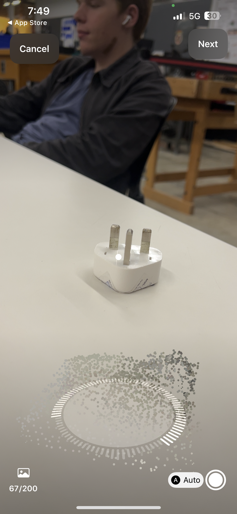
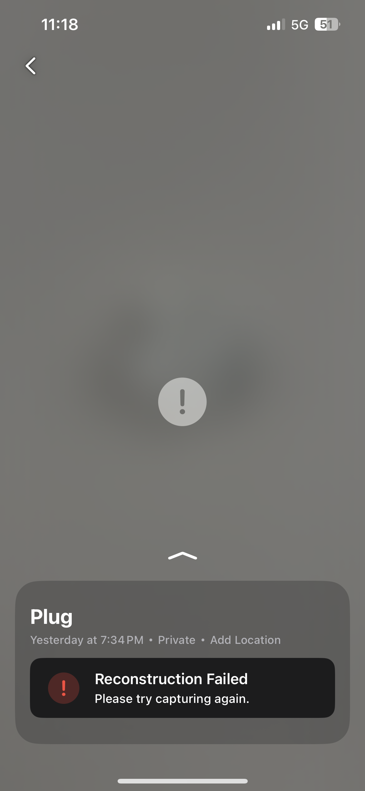
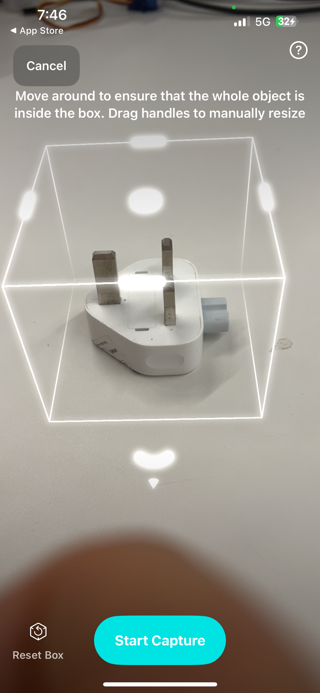
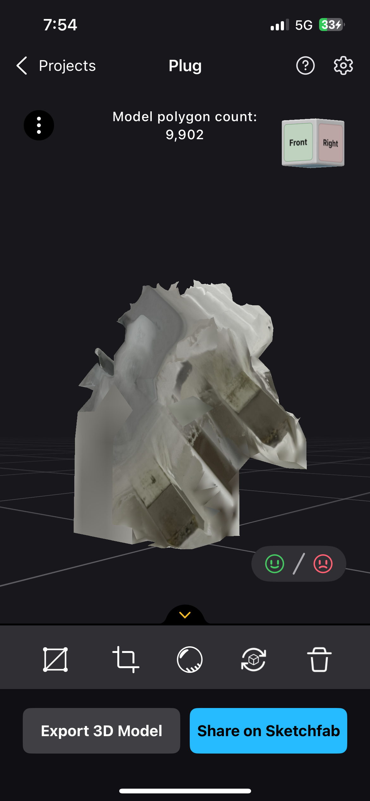
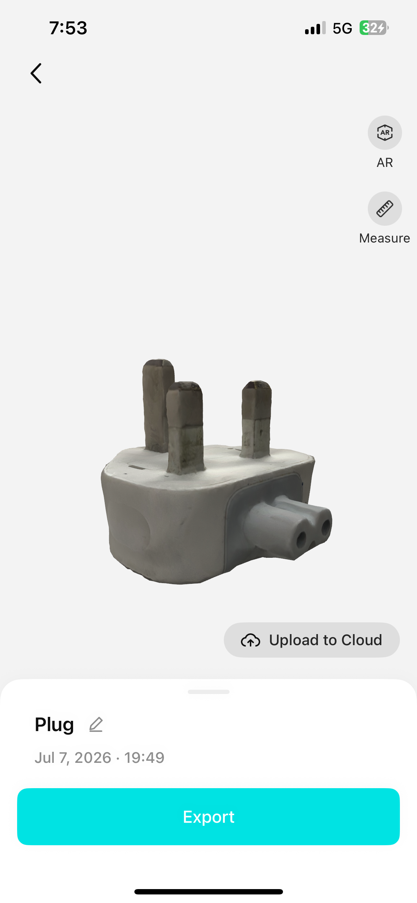
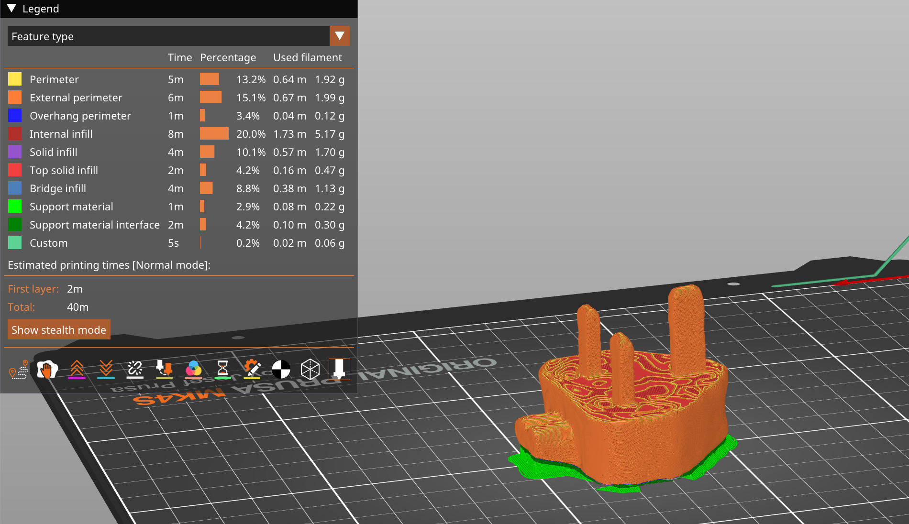
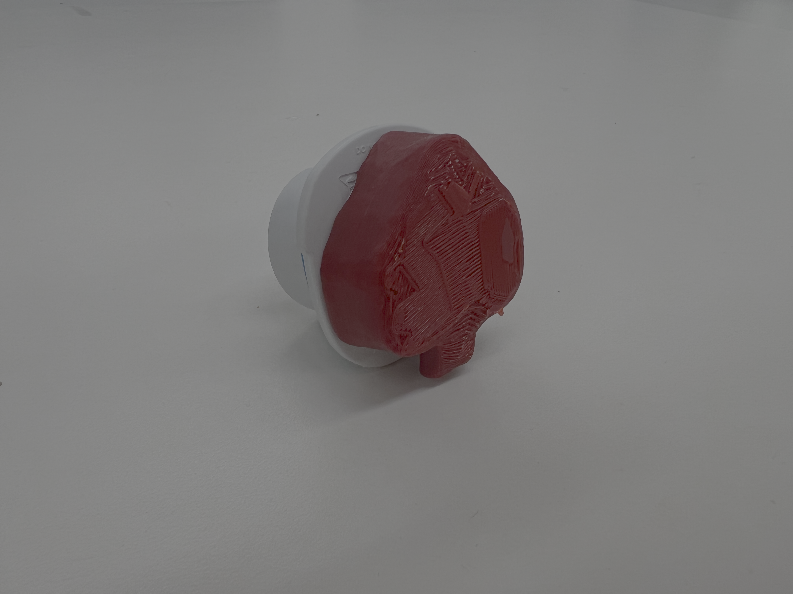

Week 5: 3D Design
Assignments 1 & 2: Photogrammetry & 3D print
For the first two assignments I decided to do them in one: Scan an object, then 3D print the CAD file of the scan.
With the photogrammetry part, I tested three iPhone apps: RealityScan, Luma, and Kiri Engine. The first two of these apps use photos only, whereas Kiri Engine makes use of the LiDAR scanner on my phone. Below are screenshots from each app during the scanning process.



CAD & Circuit Design Process
RealityScan and Luma work by stitching together images taken at different angles to form a 3D object. This requires a lot of photos to be taken, which is time consuming. Both of these apps though had very similar interfaces for doing this though, using a kind of ring-closing game that showed you where to position your phone to get al the required angles. I chose to scan the UK plug of my laptop charger. Unfortunately, Luma really did not like the images I took and could not produce a 3D model.
Kiri Engine uses the difference in the sending and receiving of light to and from an object to calculate depth. The app uses a 3D bounding box, and a gamified target system to get a good scan, but involves less work than either RealityScan and Luma. The 3D results from RealityScan and Kiri Engine are shown below.


RealityScan & Kiri Engine Models
Clearly out of the two models above, Kiri Engine produced a far better result of the plug over RealityScan, which did capture the pins realtively well, but the rest was a mess possibly because of its reflectivity. Using the Kiri Engine model, I exported the .OBJ file into Prusa slicer, shown below:

Scanned model in Prusa Slicer.
I laid the plug on its back to minimise the number of overhanging parts, the only one now being the bottom part of the plug. This also means there is very minimal support material, which reduced the print time to 30 minutes.



Printed plug, Print in Socket & Real Plug in Socket.
To my surprise, the scan and print was accurate enough to fit into my UK plug adaptor (As seen above). The fit was snug, and removing the printed plug required some care as the PLA pins can bend easily but it worked very well.
Assignment 3: Bill of Materials
Thinking more deeply about my project, I have chosen the Spatial CAD Handheld Controller as I think it would be a valuable stepping stone solution for AR CAD design that would give me something novel to pitch as a business idea. To achieve this, I will need mostly components that can be found in the lab.
Below is the Bill of Materials, with suggestions for alternatives if we don't have a specific component:
- Seeed Studio XIAO ESP32-C3
- Breadboard
- Jumper Wires
- USB-C Cable
- 9-Axis IMU
- Button x2
- Switch x2
- Mini mouse wheel switch encoder (Preference) OR rotary encoder
- LiPo Battery
- LiPo Charging Board
- Mini vibration motor
- 3D printing filament
There are quite a lot of inputs for the controller, and they will need to fit in quite a small space, so I have chosen mini components rather than large ones. I think all components can be found alreadyb in the lab except for the combined rotary encoder and switch (Think a mouse wheel which can click). I hope if we don't have this, that we can get hold of one!
The timeline is hard to see right now, however I think my next step is to connect a rotary encoder to my arduino and have it broadcast data to my raspberry pi. Following this, I would need to program in unity a basic user interface that could take that data and build shapes from it.